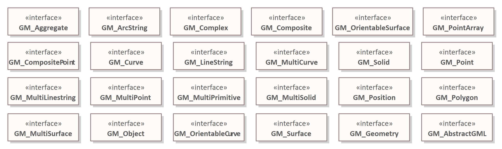

Primitieve Datatypes
UML modellen maken gebruik van primitive datatypes zoals bijvoorbeeld gedefinieerd in het MIM. In: svn.geostandaarden.nl/Datatypes zijn drie collecties met primitieve types opgenomen die alle primitieve types bevat die in Geonovum UML modellen gebruikt zijn. De volgende collecties zijn er:
- De primtieve types genoend in MIM
- De geometrietypes genoemd in ISO19107
- Overige datatypes die niet in de twee lijstjes hieronder vallen
Deze packages zijn in beheer bij @wilkoquak. Het is de bedoeling dat er in [Imvertor] een mapping komt die precies overeenkomt het deze drie collecties types
Geometrie datatypes
In dit package zitten de geometrische datatypes zoals genoemd in ISO19107:2003.

MIM datatypes
In dit package zitten de geometrische datatypes zoals genoemd in MIM.
Geonovum datatypes
In dit package zitten datatypes die niet in de twee eerdergenoemde packages vallen maar wel ergens gebruikt zijn bij Geonovum.